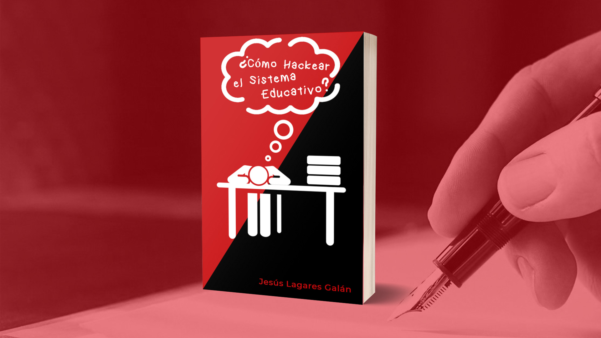
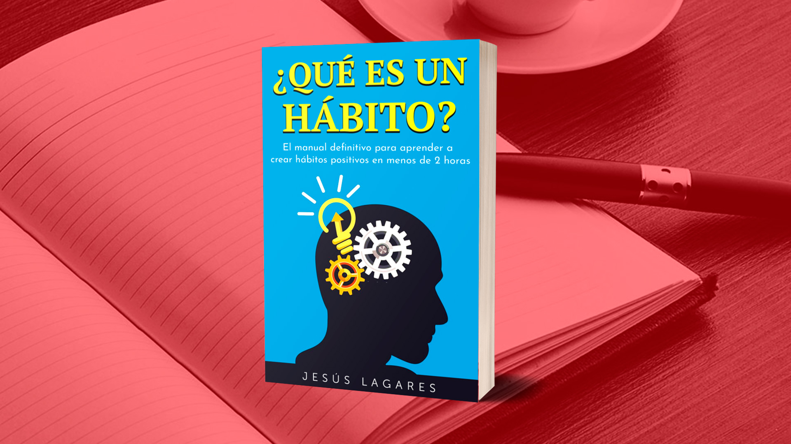
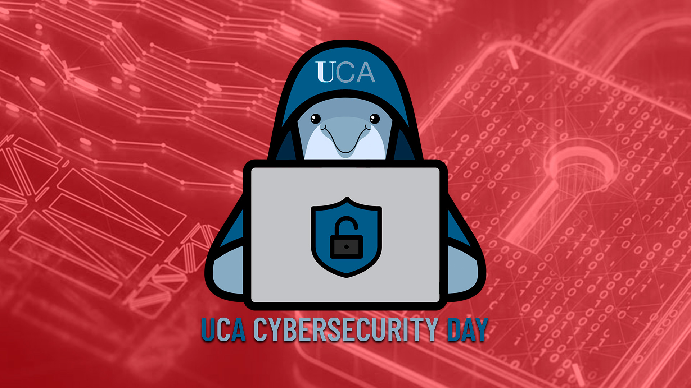

Ingeniero Informático, Escritor & Speaker
He venido a dar espectáculo
¡Hola! Soy Jesús Lagares
¿Buscas un ingeniero informático apasionado por la tecnología y entusiasmado por aprender? ¿Buscas un speaker capaz de presentar, exponer, o hablar haciendo disfrutar a los oyentes?
En cualquiera de los dos casos, debería presentarme.
Hablar en público y la tecnología son las dos tecnologías que sustentan mi vida, y pienso dedicarme a ello. Actualmente me encuentro finalizando el Grado en Ingeniería Informática en la Universidad de Cádiz. Presento interés en resolver problemas, Ciberseguridad, Blockchain, y Process Mining.
En cualquiera de los dos casos, debería presentarme.
Hablar en público y la tecnología son las dos tecnologías que sustentan mi vida, y pienso dedicarme a ello. Actualmente me encuentro finalizando el Grado en Ingeniería Informática en la Universidad de Cádiz. Presento interés en resolver problemas, Ciberseguridad, Blockchain, y Process Mining.
Todos los Proyectos




¿Hablamos?
¿Interesad@ en trabajar juntos o mantener una conversación? Deberíamos hablar. Yo invito al café